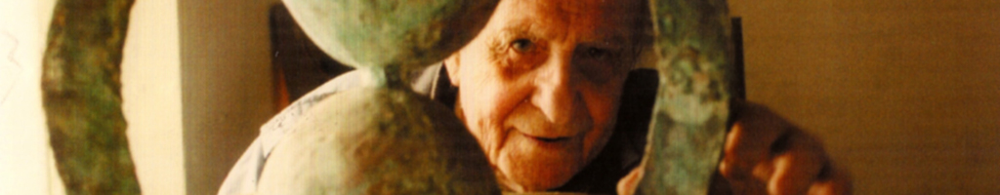

|
GR. EN. FR. |
| Γλυπτά | Λάδια | Μελέτες | Άλλα Έργα | Χαρακτικά | Συνολικό Έργο |
|  |
|
|
|
|
|
 |
ΑΡΧΙΚΗ | ΒΙΟΓΡΑΦΙΑ | ΕΡΓΑ | ΔΙΑΓΩΝΙΣΜΟΙ | ΕΠΙΚΟΙΝΩΝΙΑ | FOLLOW US |
| ΒΙΟΓΡΑΦΙΚΟ ΧΡΟΝΟΛΟΓΙΟ |
ΓΛΥΠΤΑ ΛΑΔΙΑ ΜΕΛΕΤΕΣ ΑΛΛΑ ΕΡΓΑ ΣΥΝΟΛΙΚΟ ΕΡΓΟ |
Χατζή 25, Αθήνα 11141 Ελλάδα Τηλ. 6942059172 Email info@andreoufoundation.org |
||||
| All Rights Reserved © Ίδρυμα Κώστα Ανδρέου, Custom Design One in Two Design | ||||||